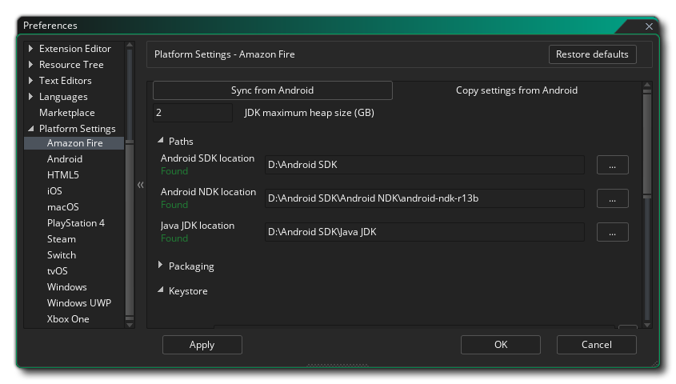

Dieser Abschnitt des Handbuchs behandelt die verschiedenen plattformspezifischen Einstellungen, die eingerichtet werden müssen, bevor Sie Ihre Spiele für bestimmte Ziele kompilieren können. Diese in der Regel müssen nur einmal eingerichtet, mit zu beginnen (wenn auch zukünftige Aktualisierungen der Laufzeiten kann es erforderlich sein, bestimmte Dinge zu ändern, aber diese werden in der erwähnt werden Release Notes ) und sind Gebrauch auf alle SDKs verweisen, die erforderlich sind, und stellen Sie grundlegende Optionen wie GameMaker Studio 2 Ihre Spielprojekte für eine bestimmte Plattform kompilieren soll. Beachten Sie, dass die verfügbaren Plattformen von der Lizenz abhängen, die Sie haben, und möglicherweise nicht alle von ihnen verfügbar sind.
Im Folgenden finden Sie eine Liste aller verfügbaren Zielplattformen und ihrer Voreinstellungen:
Die Amazon Fire Einstellungen sind in verschiedene Abschnitte unterteilt, die unten aufgeführt sind. Einige davon beziehen sich auf Android Tools, da das Ziel von AMazon Fire auf Android basiert und dieselben SDK-Anforderungen erfüllt. 
Oben in den Einstellungen haben Sie die Möglichkeit, die Einstellungen des Android Exports zu synchronisieren. Dies ist für diejenigen, die die Mobile Lizenz haben und bereits den Android Export eingerichtet und verwendet haben, da Amazon Fire fast genau dieselben Build-Tools wie Android. Klicken Sie auf diese Schaltfläche, um alle relevanten Einstellungen von Android zu importieren, und überprüfen Sie sie anschließend, um sicherzustellen, dass sie korrekt sind.
Unter der Schaltfläche Synchronisieren können Sie die Größe des Memory Heap für das Android JDK festlegen. Als nächstes müssen Sie die verschiedenen Pfade einrichten, damit GameMaker Studio 2 weiß, wo Sie nach den verschiedenen Werkzeugen suchen müssen, die zum Erstellen des endgültigen ausführbaren Pakets und zum Testen Ihres Spiels erforderlich sind. Dies ist in drei Abschnitte für das Android SDK, Android NDK und Java JDK unterteilt. Diese Pfade sollten automatisch für Sie ausgefüllt worden sein, aber sollten Sie Probleme haben, können Sie auf die Schaltfläche auf der rechten Seite klicken, um den Datei-Explorer zu öffnen und die Speicherorte für jedes Element manuell auszuwählen. Details zu den erforderlichen Versionen für die einzelnen SDK-Elemente finden Sie hier. Pfade sollten überprüft werden, wenn Sie sie anwenden, und eine Nachricht zeigt "Gefunden" an oder weist Sie auf Fehler hin (in diesem Fall sollten Sie alle Informationen überarbeiten, um sicherzustellen, dass sie korrekt sind).
Darunter haben Sie die verschiedenen Verpackungsoptionen, die sind:
- Immer die vollständige APK-Installation durchführen: Wenn Sie dies markieren, wird GameMaker Studio 2 alle vorherigen Runner Ihres Spiels von Ihrem Gerät sowie alle zugehörigen Dateien (z. B. *.ini-Dateien) von Ihrem Testgerät entfernen, bevor Sie eine neue Version von das Spiel.
- Install on package: Wenn diese Option markiert ist, wird eine endgültige ausführbare Datei kompiliert *.apk Paket wird es auch automatisch auf allen angeschlossenen Geräten installieren.
Endlich kommen wir zum KeyStore. Dies ist eine Datei, die verwendet wird, um alle Ihre Amazon Fire Apps zu "signieren", also füllen Sie bitte alle Details korrekt aus und denken Sie daran, dass diese Datei benötigt wird, um all Ihre Amazon Fire Apps in Zukunft zu erstellen und zu aktualisieren Nach der Einrichtung wird empfohlen, einen Screenshot der verwendeten Einstellungen zu erstellen und eine Sicherungskopie der endgültigen Datei zu erstellen. Wenn Sie diese Datei verlieren Sie keine vorhandenen Spiele aktualisieren können, die auf den Google Play Store hochgeladen.
HINWEIS: Derselbe Keystore kann sowohl für die Android als auch für die Amazon Fire Ziele verwendet werden.
Um eine neue Schlüsselspeicherdatei zu erstellen, sind folgende Details erforderlich:
- Dateiname: Dies ist der Name der KeyStore-Datei. HINWEIS: Dies ist nicht Ihr Name oder der Firmenname, sondern der Name der zu erzeugenden Datei! Wenn Sie bereits eine Keystore-Datei aus früheren Projekten besitzen, können Sie hier auf die Dateibrowser-Schaltfläche klicken und GameMaker Studio 2 in die alte Keystore-Datei leiten (oder auf die Schaltfläche Importieren klicken). In diesem Fall müssen Sie immer noch den Rest der erforderlichen Informationen ausfüllen (so wie es beim ersten Generieren der Datei der Fall war), aber Sie dürfen nicht auf die Schaltfläche " Key Hash generieren" klicken!. Dadurch wird eine neue Keystore-Datei generiert, die die vorherige überschreibt.
- Allgemeiner Name: Dies wäre normalerweise Ihr Name.
- Passwort: Ihr Sicherheitskennwort für die KeyStore-Datei, die mindestens sechs Zeichen lang sein muss.
- Alias: Dies ist ein anderer Name, der für die KeyStore-Datei verwendet werden kann und sich von dem oben eingegebenen Namen unterscheiden sollte.
- Organisationseinheit: Die Abteilung innerhalb der Firma, der Sie angehören.
- Organisation: Der Name Ihrer Firma.
- Ort: Der Name der Stadt, in der Sie wohnen.
- Land: Der Standardcode aus zwei Buchstaben für das Land, in dem Sie Ihren Wohnsitz haben.
Sobald diese Informationen ausgefüllt sind und Sie damit zufrieden sind, klicken Sie auf die Schaltfläche Key Hash für GameMaker Studio 2 generieren, um die erforderliche KeyStore-Datei zu erstellen. Dies kann einen Moment dauern, aber sobald es fertig ist, muss es normalerweise nicht erneut geändert werden. Beachten Sie, dass Sie auf die Schaltfläche Importieren klicken, können Sie eine bereits erstellte Schlüsselspeicher - Datei zu importieren (den Dateinamen Abschnitt, siehe oben), und Sie können auch die Schlüsselspeicher SHA1 - Hash abrufen, indem Sie die Show Key Hash - Schaltfläche klicken. Wenn Sie auf diese Schaltfläche klicken, werden zwei spezielle Sicherheits-Hash-Schlüssel generiert, die direkt mit Ihrer Keystore-Datei verknüpft sind und für bestimmte Websites erforderlich sind (z. B. Facebook oder Google Play für den Sha1-Hash). Wenn Sie dies benötigen, drücken Sie einfach die Taste, kopieren Sie dann die erzeugten Hash-Schlüssel und fügen Sie sie ein.
Weitere Informationen zum Einrichten der erforderlichen Amazon Fire SDKs finden Sie in diesem Artikel in der YoYo Games Knowledge Base.
Die Android Einstellungen sind in verschiedene Abschnitte unterteilt.
Am oberen Rand der Einstellungen können Sie die Größe des Memory Heap für das Android JDK festlegen. Als nächstes müssen Sie die verschiedenen Pfade einrichten, damit GameMaker Studio 2 weiß, wo Sie nach den verschiedenen Werkzeugen suchen müssen, die zum Erstellen des endgültigen ausführbaren Pakets und zum Testen Ihres Spiels erforderlich sind. Dies ist in drei Abschnitte für das Android SDK, Android NDK und Java JDK unterteilt. Diese Pfade sollten automatisch für Sie ausgefüllt worden sein, aber sollten Sie Probleme haben, können Sie auf die Schaltfläche auf der rechten Seite klicken, um den Datei-Explorer zu öffnen und die Speicherorte für jedes Element manuell auszuwählen. Details zu den erforderlichen Versionen für die einzelnen SDK-Elemente finden Sie hier. Pfade sollten überprüft werden, wenn Sie sie anwenden, und eine Nachricht zeigt "Gefunden" an oder weist Sie auf Fehler hin (in diesem Fall sollten Sie alle Informationen überarbeiten, um sicherzustellen, dass sie korrekt sind).
Darunter haben Sie die verschiedenen Verpackungsoptionen, die sind:
- Immer die vollständige APK-Installation durchführen: Wenn Sie dies markieren, wird GameMaker Studio 2 alle vorherigen Runner Ihres Spiels von Ihrem Gerät sowie alle zugehörigen Dateien (z. B. *.ini-Dateien) von Ihrem Testgerät entfernen, bevor Sie eine neue Version von das Spiel.
- Install on package: Wenn diese Option markiert ist, wird eine endgültige ausführbare Datei kompiliert *.apk Paket wird es auch automatisch auf allen angeschlossenen Geräten installieren.
Endlich kommen wir zum KeyStore. Dies ist eine Datei, die verwendet wird, um alle Ihre Android Apps zu "signieren", also füllen Sie bitte alle Details korrekt aus und beachten Sie, dass diese Datei benötigt wird, um all Ihre Android Apps in der Zukunft zu erstellen und zu aktualisieren Es wird empfohlen, einen Screenshot der verwendeten Einstellungen zu erstellen und eine Sicherungskopie der endgültigen Datei zu erstellen. Wenn Sie diese Datei verlieren Sie keine vorhandenen Spiele aktualisieren können, die auf den Google Play Store hochgeladen.
HINWEIS: Derselbe Keystore kann sowohl für die Android als auch für die Amazon Fire Ziele verwendet werden.
Um eine neue Schlüsselspeicherdatei zu erstellen, sind folgende Details erforderlich:
- Dateiname: Dies ist der Name der KeyStore-Datei. HINWEIS: Dies ist nicht Ihr Name oder der Firmenname, sondern der Name der zu erzeugenden Datei! Wenn Sie bereits eine Keystore-Datei aus früheren Projekten besitzen, können Sie hier auf die Dateibrowser-Schaltfläche klicken und GameMaker Studio 2 in die alte Keystore-Datei leiten (oder auf die Schaltfläche Importieren klicken). In diesem Fall müssen Sie immer noch den Rest der erforderlichen Informationen ausfüllen (so wie es beim ersten Generieren der Datei der Fall war), aber Sie dürfen nicht auf die Schaltfläche " Key Hash generieren" klicken!. Dadurch wird eine neue Keystore-Datei generiert, die die vorherige überschreibt.
- Allgemeiner Name: Dies wäre normalerweise Ihr Name.
- Passwort: Ihr Sicherheitskennwort für die KeyStore-Datei, die mindestens sechs Zeichen lang sein muss.
- Alias: Dies ist ein anderer Name, der für die KeyStore-Datei verwendet werden kann und sich von dem oben eingegebenen Namen unterscheiden sollte.
- Organisationseinheit: Die Abteilung innerhalb der Firma, der Sie angehören.
- Organisation: Der Name Ihrer Firma.
- Ort: Der Name der Stadt, in der Sie wohnen.
- Land: Der Standardcode aus zwei Buchstaben für das Land, in dem Sie Ihren Wohnsitz haben.
Sobald diese Informationen ausgefüllt sind und Sie damit zufrieden sind, klicken Sie auf die Schaltfläche Key Hash für GameMaker Studio 2 generieren, um die erforderliche KeyStore-Datei zu erstellen. Dies kann einen Moment dauern, aber sobald es fertig ist, muss es normalerweise nicht erneut geändert werden. Beachten Sie, dass Sie auf die Schaltfläche Importieren klicken, können Sie eine bereits erstellte Schlüsselspeicher - Datei zu importieren (den Dateinamen Abschnitt, siehe oben), und Sie können auch die Schlüsselspeicher SHA1 - Hash abrufen, indem Sie die Show Key Hash - Schaltfläche klicken. Wenn Sie auf diese Schaltfläche klicken, werden zwei spezielle Sicherheits-Hash-Schlüssel generiert, die direkt mit Ihrer Keystore-Datei verknüpft sind und für bestimmte Websites erforderlich sind (z. B. Facebook oder Google Play für den Sha1-Hash). Wenn Sie dies benötigen, drücken Sie einfach die Taste, kopieren Sie dann die erzeugten Hash-Schlüssel und fügen Sie sie ein.
Weitere Informationen zum Einrichten der erforderlichen Android SDKs finden Sie in diesem Artikel in der YoYo Games Knowledge Base.
Die iOS- Einstellungen haben folgende Optionen:
- Standard-Team-ID: Hier können Sie Ihre Standard-Team-ID hinzufügen , die Ihnen von Apple zugewiesen wurde. Diese Team-ID wird verwendet, wenn Ihre Spieledateien zum Erstellen der App an Xcode gesendet werden und Xcode die erforderlichen Signaturzertifikate generieren kann. Beachten Sie, dass diese Einstellung standardmäßig auf alle Spiele angewendet wird, die für iOS erstellt wurden. Sie kann jedoch pro Projekt von den Allgemeinen iOS-Spieloptionen überschrieben werden.
- Build und Ausführung unterdrücken: Standardmäßig erstellt GameMaker Studio 2 beim Erstellen eines iOS-Projekts und anschließendem Erstellen eines endgültigen ausführbaren Pakets das Paket und versucht dann, es auf allen angeschlossenen Geräten auszuführen. Wenn Sie diese Option aktivieren, wird das Erstellen der App und das Ausführen auf dem Gerät unterdrückt und einfach ein XCode-Projekt auf dem Host-Mac erstellt
- macOS- Installationspfad: Der Installationspfad für die Projektdateien auf dem Build-Mac.
Die macOS- Einstellungen haben folgende Optionen:
- Standard-Team-ID: Hier können Sie Ihre Standard-Team-ID hinzufügen , die Ihnen von Apple zugewiesen wurde. Diese Team-ID wird verwendet, wenn Ihre Spieledateien zum Erstellen der App an Xcode gesendet werden und Xcode die erforderlichen Signaturzertifikate generieren kann. Beachten Sie, dass diese Einstellung standardmäßig auf alle Spiele angewendet wird, die für macOS erstellt wurden. Sie kann jedoch pro Projekt aus den allgemeinen macOS-Spieloptionen überschrieben werden.
Das Steam SDK wird für Windows, Mac OS und Ubuntu (Linux) Builds verwendet, die über die Steam Plattform verteilt werden. Dieser Abschnitt enthält die erforderlichen Setup-Optionen, damit Sie in Ihren Projekten arbeiten können:
- Path To Steam SDK: Der Systempfad zu dem Ort, an dem Sie das Steam SDK installiert haben. Sobald Sie diesen Pfad zum SDK festgelegt haben, müssen Sie Steam in den Spieloptionen aktivieren und dann für jede Plattform die App-ID hinzufügen.
Die Windows- Einstellungen haben folgende Optionen:
- Visual Studio-Pfad: Diese Option zeigt GameMaker Studio 2 auf die MS Visual Studio-Installation auf dem Build-PC an.
- Standard- Pakettyp: Wenn Sie ein endgültiges ausführbares Windows-Paket erstellen, können Sie entweder ein Installationsprogramm (mit NSIS ) oder eine komprimierte ZIP-Datei erstellen, in der sich das Spiel und alle weiteren Dateien befinden. Standardmäßig erhalten Sie eine Auswahl, welche der beiden Optionen Sie beim Kompilieren auswählen möchten, aber Sie können diese Einstellung so einstellen, dass immer das eine oder das andere verwendet wird. Wenn diese Option auf " Dialog anzeigen" eingestellt ist, wird im Dialogfeld, das beim Kompilieren angezeigt wird, die Option "Speichern der Paketoption" diese Einstellung auf die ausgewählte Option setzen.
Die Windows UWP Einstellungen haben folgende Optionen:
- Visual Studio-Pfad: Diese Option zeigt GameMaker Studio 2 auf die MS Visual Studio-Installation auf dem Build-PC an.
- Standard- Paketarchitektur: Beim Erstellen eines endgültigen ausführbaren Windows UWP Pakets können Sie wählen, ob Sie ein x86-, x64- oder ARM- Paket erstellen möchten, in dem sich das Spiel und weitere Dateien befinden. Hier können Sie einen Standardwert für das zu verwendende Paket festlegen oder " Dialog anzeigen" auswählen, um ein Fenster zu öffnen, wenn Sie auf die Schaltfläche zum Kompilieren klicken, um zu fragen, welche Datei ausgewählt werden soll. Im Allgemeinen möchten Sie x86 für Windows 10 Computer, x64 für Xbox One und ARM für Windows 10 Geräte festlegen.


Beachten Sie, dass Sie neben dem Einrichten dieser Einstellungen auch die Geräte einrichten müssen, auf die einige dieser Plattformen abzielen. Andernfalls können Sie Ihre Projekte möglicherweise weder kompilieren noch testen. Weitere Informationen finden Sie im Abschnitt zum Kompilieren und im Abschnitt zum Geräte-Manager.